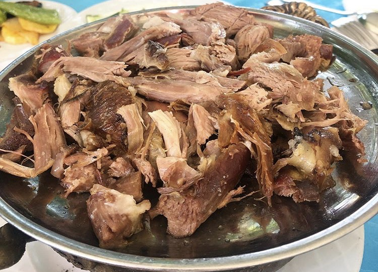

1.Bozdoğan
- Tandır Kebabı 
- Bozdoğan Pidesi
- Madran Memba Suyu
Bozdoğan İlçesinin meşhur özelliklerinden biri de yaz aylarında yapılan Tandır Kebabıdır. Yere kazılmış ve kenarları taşla örülmüş bir kuyu içinde, ortalama 1 yaşındaki yağlı oğlak etinin, üstü kapatılarak 1,5-2 saat kadar bütün olarak pişirilmesiyle hazır hale gelen Tandır Kebabının lezzeti sadece Bozdoğanla sınırlı kalmayıp tüm Aydın'a hatta oradan da tüm Ege'ye yayılmıştır.

Meşhur yemeklerden biri de Bozdoğan'a özgü pidedir. Pide genel olarak tüm Türkiye'de yenilen bir yemek olmasına rağmen, Bozdoğan pidesinin en önemli özelliği etinin kalitesi ve yumuşak hamurudur. Ayrıca üzerine konulan manda kaymağı da lezzetine lezzet katmaktadır. Geçtiğimiz yıllarda basında yapılan bazı araştırmalarda Türkiye çapında en iyi pideciler sıralamasında Bozdoğan'dan Mikado Pide ilk beşe girmiş ve bölgeye gelen ziyaretçilerin mutlak uğrak yeri olmuşlardır.
İlçenin en meşhur özelliği Madran ismiyle meşhur memba suyudur. Madran Baba Dağı'nın Bozdoğan'ın bulunduğu doğu yamacındaki Hisar Kaya bölgesinde çok sayıdaki kaynaktan çıkan memba suyu, Bozdoğan Belediyesi'ne ait bir, özel bir firmaya ait diğer bir dolum fabrikası olmak üzere toplam 2 adet işletmede, son derece hijyenik ortamlarda el değmeden doldurulup tüketicilere sunulmaktadır. Özellikle kayalık bir bölgeden çıkması, ve kaya yarıklarından geçerek süzülmesi sayesinde Madran Dağından elde edilen diğer Madran sularına göre çok daha kaliteli olan Bozdoğan Madran Memba Suyu, aynı zamanda Madran isminde piyasaya çıkan ilk kaynak suyudur. Avrupa'dan ABD'ye kadar birçok ülkeye de ihraç ediliyor olması sadece Türkiye'de değil diğer ülkelerde de oldukça beğenildiğini gösteren bir kanıttır.